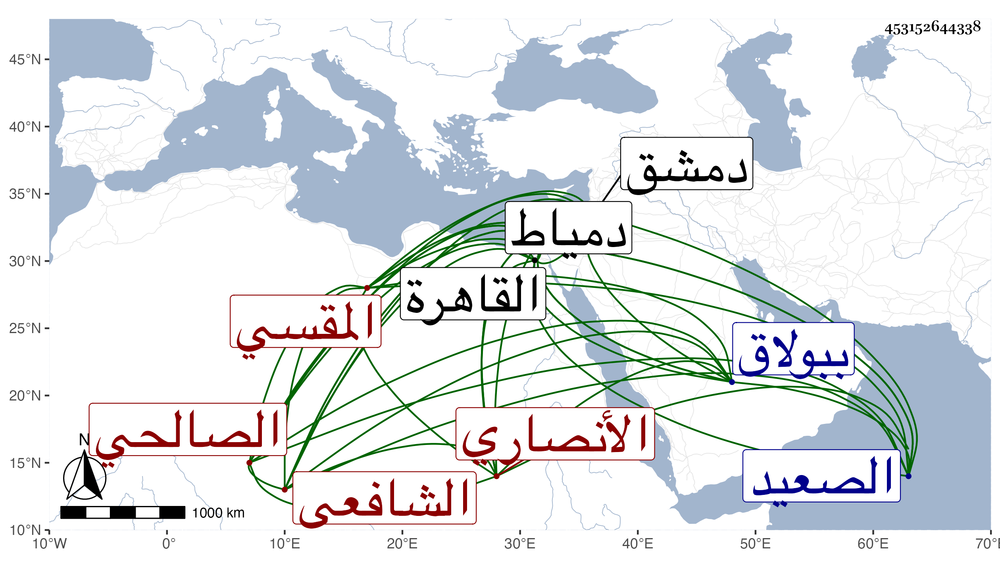

0902Sakhawi.DawLamic.ITO20230111-ara1.EIS1600.453152644338
Biography ID: 453152644338
533
علي بن إبراهيم بن أبي بكر نور الدين الأنصاري المقسي الشافعي ويعرف بالكلبشي وبالكلبشاوي وربما قيل له الصالحي . ولد في ليلة حادي عشر شعبان سنة أربعين وثمانمائة بالقاهرة في المقسم فنشأ وحفظ القرآن والعمدة والمنهاج الفرعي والأصلي وألفية النحو واشتغل في فنون وتميز ومن شيوخه المناوي والعلم البلقيني والشرواني قرأ عليه في العضد وحاشيتيه وكذا التقى الحصني قرأ عليه في العضد وحاشية سعد الدين فقط والشمني في الأصلين والتفسير وغيرها واليسير جدا عن الكافياجي ولازم البقاعي في مناسباته وغيرها وعظم اختصاصه به ثم تنافر والتقى القلقشندي والولوي البلقيني وابن قاسم وزكريا وطائفة وصحب الشيخ مدين وتردد إلى الناس وأقرأ الطلبة وناب في القضاء وما حصل منه على طائل ولذا أعرض عنه وانجمع عن الناس وقطن جامع الزاهد قائما بوظائف العبادة مع التقنع باليسير وربما خطب به وأم ، وسافر الصعيد ودمياط وغيرهما بل حج غير مرة وجاور وكذا دخل دمشق قديما مع شيخه الولوي حين ولي قضاءها وناب عنه هناك ثم دخله بأخرة واستقر به الأشرف قايتباي في مشيخة الفقراء بالمكان الذي أنشأه بدمياط وتوجه لتربية المريدين والتصدر للذاكرين بعد أن أقام بالمنزلة مدة وراج أمره في تلك الناحية جدا واعتمدوا فتواه لإقبال قاضيها أمام الدين عليه وحضوره عنده بل وبنى له بيتا وكان ولده يقرأ عليه وبعد موته فوض الزيني زكريا أمرها إليه وعز ذلك على كثيرين منهم لرعاية جانب المتوفى في ولده فكفهم الولد عنه وكان ذلك سببا لإعراضه عنها وانحطاط مرتبته فيها ثم استعفى من مكان السلطان لعدم سياسته ورجع إلى المنزلة ثم أعرض عنهما ونزل جامع الزاهد بعد أن ورث من أخ له شيئا رام إدارته فيما يتكسب منه فما أنجح به وتردد لابن الزمن وطمع أن يكون شيخ المكان الذي شرع في بنائه ببولاق فمات قبل إكماله وبالجملة فهو مع تفتنه وفضله وسكونه قوي النفس جدا وما أظن صحة ما ينسب إليه وقد أكثر من التردد إلي وسمع علي ومني أشياء وأوقفني على تصنيف له سماه الفيض القدسي على آية الكرسي في كراريس أجاد فيه
